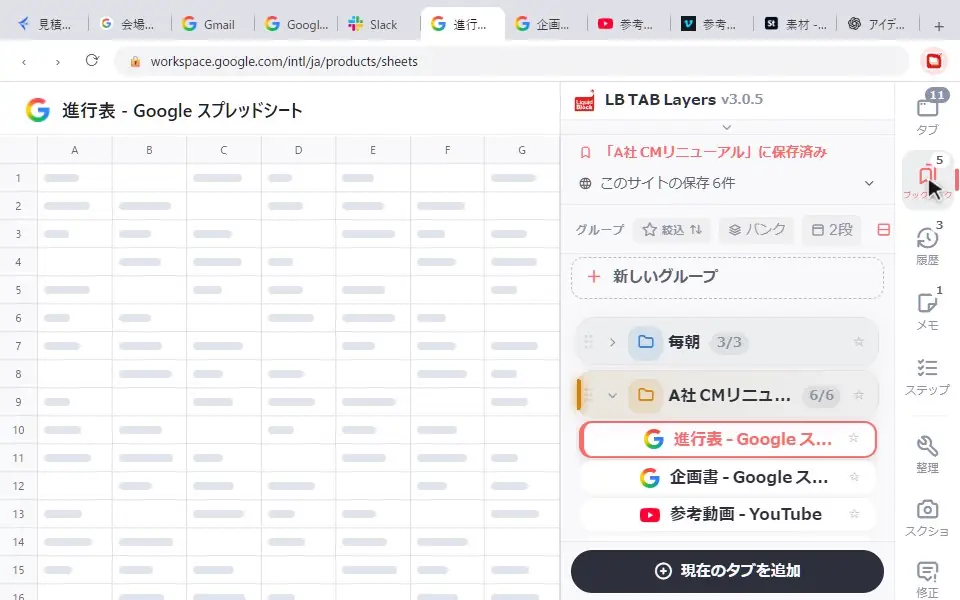

Chrome の縦タブは、タブバーの空白かタブを右クリックして［タブを縦方向に表示］を選ぶとオンになります。横に戻すときは［タブを横方向に表示］を選びます。縦にすると、すべてのページの題名が読めて、タブの一覧をスクロールでき、幅も変えられます。ただし、縦タブは「開いているタブの見せ方」を変える機能です。タブを仕事ごとに保存して閉じ、あとでまとめて開き直したいときは、保存の仕組みを組み合わせます。
💡 縦に並べたタブを、仕事ごとに「しまう」。 開いているタブを案件ごとのグループに保存して閉じ、▶ で同じ名前・同じ色のタブグループとして開き直せます。アカウント登録なし。 LB TAB Layers を Chrome に無料で追加 →
2026 年の春、Chrome に「タブを縦方向に表示」する機能が標準でつきました。タブが画面の横にずらりと並び、題名が全部読めるようになります。この記事では、Google の公式ヘルプの手順をもとに、縦タブのオンとオフ、できることをまとめます。
Chrome の縦タブをオンにする方法
いくつかの入口があります。どれでも同じです。
| どこから | 操作 |
|---|---|
| タブバー | タブバーの空白を右クリック →［タブを縦方向に表示］ |
| タブ | タブを右クリック →［タブを縦方向に表示］ |
| 設定 | ［設定］→［デザイン］→［タブの位置］で［縦］を選ぶ |
| ︙ のメニュー | 右上の ︙（その他）→［その他のツール］→［タブを縦方向に表示］ |
| Mac のメニュー | ［表示］→［タブを縦方向に表示］ |
横に戻す方法
同じ場所で［タブを横方向に表示］を選ぶと、いつもの横並びに戻ります。設定からなら、［デザイン］→［タブの位置］で［横］を選びます。
縦タブでできること
- すべてのページの題名が読める：横並びのように、タブが増えるほど題名が短く切れることがありません。
- タブの一覧をスクロールできる：たくさん開いていても、上下に送って探せます。
- 幅を変えられる：縦のタブバーの幅を、画面に合わせて調整できます。
- たたんで細くできる：たたんだ表示でも、カーソルを合わせるとタブグループの名前やページの題名が広がって見えます。
タブを 20 個、30 個と開く人にとって、題名が全部読めるのは大きな改善です。
縦タブで変わるのは「見せ方」
縦タブは、開いているタブの並べ方を、横から縦に変える機能です。タブの数そのものは減りません。開きっぱなしのタブが 40 個あれば、縦に 40 個並びます。
タブが多くなる原因は、たいてい「閉じると、あとで見つからない」ことです。だから閉じられずに、開いたまま置いておく。この悩みは、並べ方を変えるだけでは消えません。必要なのは、閉じても、あとで仕事ごとにまとめて戻せる場所です。
縦タブと一緒に使うと便利：LB TAB Layers
ここからは、私たちが自分たちの仕事のために作った Chrome 拡張「LB TAB Layers」でのやり方です。縦タブとは役目が違うので、両方を一緒に使えます。
| Chrome の縦タブ | LB TAB Layers | |
|---|---|---|
| 役目 | 開いているタブを、縦に見やすく並べる | タブを仕事ごとに保存して、しまう・開き直す |
| 閉じたタブ | （並べる機能なので、閉じたタブは並ばない） | 保存先は Chrome のブックマーク。閉じても消えない |
| 仕事の切り替え | — | ■ でまとめて閉じて、▶ でまとめて開く |
| まとめ方 | Chrome のタブグループ | 案件 ＞ 工程のように、グループの中にサブグループ |
とくに相性がいいのが、▶ で開いたときの動きです。LB TAB Layers で保存したグループを ▶ で開くと、同じ名前・同じ色の Chrome のタブグループにまとまって開きます。縦タブにしていれば、そのタブグループがそのまま縦に並びます。仕事が終わったら ■ で、そのタブグループごと閉じます（「まとめて開くと、タブグループになる」）。
縦タブで「今」のタブを見やすく並べ、LB TAB Layers で「あとで」のタブを仕事ごとにしまう。この分担にすると、縦に並ぶタブがいつも、今の仕事のぶんだけになります。

まとめ
- オンにする：タブバーの空白かタブを右クリック →［タブを縦方向に表示］
- 戻す：［タブを横方向に表示］、または 設定 → デザイン →［タブの位置］で［横］
- できること：題名が全部読める・スクロールできる・幅を変えられる・たたんで細くできる
- 縦タブは「見せ方」。タブを減らすには、仕事ごとに保存して閉じられる場所を組み合わせる
Chrome の横のパネル全般については「Chrome のサイドバー完全ガイド」にまとめています。
よくある質問
Q. Chrome でタブを縦に並べるには？
タブバーの空白かタブを右クリックして［タブを縦方向に表示］を選びます。設定 → デザイン →［タブの位置］で［縦］を選んでも同じです。
Q. Chrome の縦タブを横に戻すには？
同じメニューで［タブを横方向に表示］を選びます。設定からなら、デザイン →［タブの位置］で［横］を選びます。
Q. 縦タブにすると、タブは減りますか？
減りません。縦タブは開いているタブの並べ方を変える機能です。タブを減らすには、仕事ごとに保存して閉じ、あとでまとめて開き直せる仕組みを組み合わせます。
Q. 縦タブと LB TAB Layers は一緒に使えますか？
使えます。LB TAB Layers で保存したグループを ▶ で開くと、同じ名前・同じ色の Chrome のタブグループとして開くので、縦タブの中にそのまま並びます。
▶ 実際の操作を動画で見る
サイドバーで、ブックマークとタブをいっしょに管理する様子です。